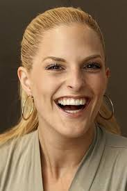

Privatleben
Mölling ist Tochter einer Krankenschwester und eines Diplomingenieurs und -physikers, die sich trennten, als
sie sechs Jahre alt war. Sie wuchs mit zwei älteren und einem jüngeren Bruder in Wuppertal, Remscheid,
Wermelskirchen, im Westerwald und in Koblenz auf. In Koblenz-Karthause ging sie auf die dortige
Realschule. Sie erwarb die Mittlere Reife und besuchte dann bis zur 11. Klasse das Gymnasium. Während der
Wartezeit auf einen Ausbildungsplatz jobbte sie als Verkäuferin in einem Bekleidungsgeschäft. Diese Stelle
gab sie auf, um im Jahr 2000 Mitglied der Girlgroup No Angels zu werden.
Ab 2002 lebte sie in Ratingen und später in Düsseldorf mit ihrem Manager, dem niederländischen Tänzer Renick
Bernadina, zusammen. Im März 2009 brachte sie in Koblenz einen gemeinsamen Sohn zur Welt. Im Juli 2009 gaben
Mölling und Bernadina ihre Trennung bekannt. Seit Herbst 2009 ist Mölling mit Nasri Atweh, dem kanadischen
Musikproduzenten, Songwriter und Sänger der Band Magic, liiert. Die beiden lernten sich bei den Arbeiten zum
fünften Studioalbum Welcome to the Dance der No Angels kennen. Aus der Beziehung mit Atweh hat Mölling einen
im Oktober 2015 geborenen Sohn. Die Familie lebt in Los Angeles.
2019 wurde bekannt, dass Mölling in Los Angeles mit ihrer Schwägerin und einer befreundeten Maklerin
beruflich Häuser umbaut. 2020 ließ sie sich zur Stillberaterin und Doula ausbilden.
Karriere
No Angels
→ Hauptartikel: No Angels
Sandy Mölling (2022)
Mölling bewarb sich in Köln mit dem Song Bohemian Rhapsody von Queen für die Castingshow Popstars des
Fernsehsenders RTL II. Nach Absolvierung des Vorsingens, weiterer Auswahlrunden und eines Gesangs- und
Tanzworkshops auf Mallorca wurde Mölling gemeinsam mit Nadja Benaissa, Lucy Diakovska, Vanessa Petruo und
Jessica Wahls Ende des Jahres 2000 Mitglied der Girlgroup No Angels.
Ende des Jahres 2003 lösten sich die No Angels aufgrund körperlicher Erschöpfung mehrerer Bandmitglieder
auf. In einem Interview erklärte Mölling später, dass sie trotz der Belastung gerne weitergemacht
hätte. Im Januar 2007 starteten Mölling und drei weitere Gründungsmitglieder ein Comeback. Nach dem
Ausstieg von Benaissa im September 2010 traten die No Angels als Trio auf, bevor im Juni 2014 die Trennung
der Band bekanntgegeben wurde. Zum 20-jährigen Bandjubiläum veröffentlichten die No Angels im Juni 2021 ihr
sechstes Studioalbum. 2022 fand im September und Oktober 2022 die Celebration Tour der No Angels statt, die
durch neun Städte in Deutschland führte.
Die No Angels platzierten vier Singles auf Platz eins der deutschen Singlecharts und vier Alben auf Platz
eins der deutschen Albumcharts, absolvierten drei Tourneen und wurden mit knapp 20 Musikpreisen
ausgezeichnet – darunter 1 Live Krone, Bambi, Comet, Echo, Goldene Kamera und World Music Award. Mit
insgesamt über fünf Millionen verkauften Tonträgern ist die Band bis heute die meistverkaufte deutsche
Girlgroup aller Zeiten und die erfolgreichste Girlgroup Kontinentaleuropas. Mölling schrieb für die
No Angels an dem Song Say Goodbye des zweiten Studioalbums Now… Us!, an den Songs One Life, Up Against the
Wall und Young Love des fünften Studioalbums Welcome to the Dance und an We Keep the Spirit Alive und Love
You for Eternity des Jubiläumalbums 20 mit.
Solosängerin
Im Mai 2004 veröffentlichte Mölling ihre erste Single Unnatural Blonde. Der Song erreichte Platz acht der
deutschen, Platz 29 der österreichischen und Platz 41 der Schweizer Singlecharts. Im August erschien die
Ballade Tell Me, mit der Mölling ihren zweiten Top-10-Hit in Deutschland erreichte. Die Single erreichte
Platz zehn in Deutschland, Platz 34 in Österreich und Platz 46 in der Schweiz. Möllings erstes Studioalbum
Unexpected erschien im September 2004. Das Album erreichte Platz 13 in den deutschen, Platz 73 in den
österreichischen und Platz 91 in den Schweizer Charts. Im gleichen Jahr erhielt Mölling in der Kategorie Pop
National den Award als Woman of the Year 2004 der Zeitschrift Maxim.
Im Februar 2005 wurde als dritte und letzte Single aus dem Debütalbum der Titelsong des Albums, Unexpected,
in einer Remixversion mit dem Rapper Manuellsen veröffentlicht. Mit dem Song trat Mölling beim Bundesvision
Song Contest 2005 von ProSieben für Rheinland-Pfalz an und belegte mit zehn Punkten gemeinsam mit Mamadee,
die zusammen mit Gentleman für Nordrhein-Westfalen antrat, den letzten Platz. In den Singlecharts erreichte
Unexpected Platz 29 in Deutschland und Platz 52 in Österreich. Da wenige Tage vor ihrem Auftritt beim
Bundesvision Song Contest 2005 ihr Stiefvater gestorben war, entschied Mölling, sich für einige Monate aus
der Öffentlichkeit zurückzuziehen. In dieser Zeit schrieb sie Songs für ihr zweites Studioalbum. Für das
Jahr 2005 wurde Mölling für den Echo in der Kategorie Beste Künstlerin National nominiert. Sie erhielt den
Jetix Kids-Award als Heißeste Sängerin des Jahres.
Im April 2006 wurde der deutsche Soundtrack des Films Bambi 2 – Der Herr der Wälder mit drei Liedern von
Mölling, Alles lebt, Es fühlt sich nach Frühling an und Through Your Eyes, veröffentlicht. Mitte Mai 2006
veröffentlichte sie über ihre neue Plattenfirma Starwatch Music die Single Crash, eine Coverversion des
gleichnamigen Liedes der Primitives aus den 1980er Jahren. Crash erreichte Platz 24 in den deutschen
Singlecharts und hielt sich dort neun Wochen. Ihr zweites Studioalbum Frame of Mind erschien Ende Mai.
Mölling schrieb an den Songs It’s Over, Gone, Occupied, Living Without You und I Do mit.
Da im Sommer 2006 von Mölling gemeinsam mit drei weiteren Gründungsmitgliedern der No Angels entschieden
wurde, im Januar 2007 ein Comeback der No Angels zu starten, wurde das Album zugunsten der Vorbereitungen
auf das Comeback nach dessen Veröffentlichung nicht weiter beworben. Das Album erreichte Platz 53 der
deutschen Albumcharts. Möllings fünfte Single, die von ihrem verstorbenen Stiefvater handelnde Ballade
Living Without You als A-Seite und als B-Seite ein Cover des Songs Sign o' the Times von Prince, erschien
Mitte November 2006. Die Single erreichte Platz 36 der deutschen Charts.
Im Oktober 2008 erschien Disneys Dornröschen auf Blu-ray. Der Titelsong Eines Nachts im Traum des Films
wurde von Mölling eingesungen.[12] Im Oktober 2014 nahm Mölling gemeinsam mit dem Rap-Duo BLAK R an der
Fernsehshow Coke Studio بالعربي teil, die in Ländern der MENA-Region ausgestrahlt wird. In der Show
kollaborieren arabische und internationale Künstler miteinander. BLAK R und Mölling nahmen gemeinsam den
Song Derailed der No Angels neu auf.
Musicalsängerin
Seit 2010 spielt Mölling regelmäßig in Musicalproduktionen mit. Für die Rolle des Engels in Vom Geist der
Weihnacht wurde Mölling gelobt.[13] Für das Musical Joseph and the Amazing Technicolor Dreamcoat galt sie
als „Glückgriff“.[14] Die Aachener Nachrichten überzeugte Mölling durch ihre Bühnenpräsenz und ihr
Gesangstalent in Cabaret.[15] Von der Saarbrücker Zeitung wurde Mölling als „perfekt“[16] für das Musical
Paradise of Pain bezeichnet. Regisseur Dieter Wedel lobte Möllings Talent als Tänzerin und Schauspielerin in
My Fair Lady.[17] In Chicago wurde sie ebenfalls für ihre schauspielerische Leistung gelobt.[18] Im Musical
Die Päpstin spielte sie die Hauptrolle.[19] Für ihre Rolle als Eliza Dolittle wurde sie mit dem Bad
Hersfelder Publikumspreis als Beliebteste Schauspielerin ausgezeichnet.[20]